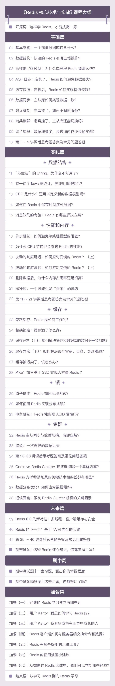

- 00 开篇词 这样学Redis，才能技高一筹.md
- 01 基本架构：一个键值数据库包含什么？.md
- 02 数据结构：快速的Redis有哪些慢操作？.md
- 03 高性能IO模型：为什么单线程Redis能那么快？.md
- 04 AOF日志：宕机了，Redis如何避免数据丢失？.md
- 05 内存快照：宕机后，Redis如何实现快速恢复？.md
- 06 数据同步：主从库如何实现数据一致？.md
- 07 哨兵机制：主库挂了，如何不间断服务？.md
- 08 哨兵集群：哨兵挂了，主从库还能切换吗？.md
- 09 切片集群：数据增多了，是该加内存还是加实例？.md
- 10 第1～9讲课后思考题答案及常见问题答疑.md
- 11 “万金油”的String，为什么不好用了？.md
- 12 有一亿个keys要统计，应该用哪种集合？.md
- 13 GEO是什么？还可以定义新的数据类型吗？.md
- 14 如何在Redis中保存时间序列数据？.md
- 15 消息队列的考验：Redis有哪些解决方案？.md
- 16 异步机制：如何避免单线程模型的阻塞？.md
- 17 为什么CPU结构也会影响Redis的性能？.md
- 18 波动的响应延迟：如何应对变慢的Redis？（上）.md
- 19 波动的响应延迟：如何应对变慢的Redis？（下）.md
- 20 删除数据后，为什么内存占用率还是很高？.md
- 21 缓冲区：一个可能引发“惨案”的地方.md
- 22 第11～21讲课后思考题答案及常见问题答疑.md
- 23 旁路缓存：Redis是如何工作的？.md
- 24 替换策略：缓存满了怎么办？.md
- 25 缓存异常（上）：如何解决缓存和数据库的数据不一致问题？.md
- 26 缓存异常（下）：如何解决缓存雪崩、击穿、穿透难题？.md
- 27 缓存被污染了，该怎么办？.md
- 28 Pika：如何基于SSD实现大容量Redis？.md
- 29 无锁的原子操作：Redis如何应对并发访问？.md
- 30 如何使用Redis实现分布式锁？.md
- 31 事务机制：Redis能实现ACID属性吗？.md
- 32 Redis主从同步与故障切换，有哪些坑？.md
- 33 脑裂：一次奇怪的数据丢失.md
- 34 第23~33讲课后思考题答案及常见问题答疑.md
- 35 Codis VS Redis Cluster：我该选择哪一个集群方案？.md
- 36 Redis支撑秒杀场景的关键技术和实践都有哪些？.md
- 37 数据分布优化：如何应对数据倾斜？.md
- 38 通信开销：限制Redis Cluster规模的关键因素.md
- 39 Redis 6.0的新特性：多线程、客户端缓存与安全.md
- 40 Redis的下一步：基于NVM内存的实践.md
- 41 第35～40讲课后思考题答案及常见问题答疑.md
- 加餐 01 经典的Redis学习资料有哪些？.md
- 加餐 02 用户Kaito：我是如何学习Redis的？.md
- 加餐 03 用户Kaito：我希望成为在压力中成长的人.md
- 加餐 04 Redis客户端如何与服务器端交换命令和数据？.md
- 加餐 05 Redis有哪些好用的运维工具？.md
- 加餐 06 Redis的使用规范小建议.md
- 加餐 07 从微博的Redis实践中，我们可以学到哪些经验？.md
- 结束语 从学习Redis到向Redis学习.md
00 开篇词 这样学Redis，才能技高一筹
你好，我是蒋德钧，欢迎和我一起学习 Redis。
我博士毕业后，就一直在中科院计算所工作，现在的职位是副研究员。在过去的 14 年时间里，我一直从事互联网底层基础设施方面的研究工作，主要的研究方向为新型存储介质、键值数据库、存储系统和操作系统。
2015 年的时候，我和我的团队接到了一个高难度任务，目标是设计一个单机性能达到千万级吞吐量的键值数据库。为了实现这个目标，我们就开始重点研究 Redis，从此，我就和这个数据库结缘了。
作为键值数据库，Redis 的应用非常广泛，如果你是后端工程师，我猜你出去面试，八成都会被问到与它相关的性能问题。比如说，为了保证数据的可靠性，Redis 需要在磁盘上读写 AOF 和 RDB，但在高并发场景里，这就会直接带来两个新问题：一个是写 AOF 和 RDB 会造成 Redis 性能抖动，另一个是 Redis 集群数据同步和实例恢复时，读 RDB 比较慢，限制了同步和恢复速度。
那这个问题有没有好的解决方法呢？哈哈，这里我卖了个关子。其实，一个可行的解决方案就是使用非易失内存 NVM，因为它既能保证高速的读写，又能快速持久化数据。我和团队就在 NVM 的键值数据库上开展了诸多深入研究，先后申请了二十余项专利，也在顶级学术会议上发表了学术论文。
当然，这些研究最后都是为了完成一开始说的那个大目标：设计一个单机千万级吞吐量的键值数据库。在这个过程中，我也深入、透彻地研究了 Redis，包括它的源代码、架构设计以及核心控制点。
另外，因为各大互联网公司在 Redis 应用方面比较超前，场景比较丰富，他们会遇到各种各样的棘手问题，所以这几年，我和蚂蚁金服、百度、华为、中兴等公司都有合作，致力于和他们一起解决生产环境的各种疑难杂症。
最后，对标 Redis，我们团队也研发了高性能键值数据库HiKV等，你感兴趣的话，可以点开链接看看整体的设计。
正是因为有这样的研究和项目经历，让我目睹了同样是使用 Redis，但是不同公司的“玩法”却不太一样，比如说，有做缓存的，有做数据库的，也有用做分布式锁的。不过，他们遇见的“坑”，总体来说集中在四个方面：
- CPU 使用上的“坑”，例如数据结构的复杂度、跨 CPU 核的访问；
- 内存使用上的“坑”，例如主从同步和 AOF 的内存竞争；
- 存储持久化上的“坑”，例如在 SSD 上做快照的性能抖动；
- 网络通信上的“坑”，例如多实例时的异常网络丢包。
随着这些深入的研究、实战操作、案例积累，我拥有了一套从原理到实战的 Redis 知识总结。这一次，我想把我多年积累的经验分享给你。
为什么懂得了一个个技术点，却依然用不好 Redis？
我知道，很多同学都是带着一个个具体的问题来学这门课的，比如说，Redis 数据怎么做持久化？集群方案应该怎么做？这些问题当然很重要，但是，如果你只是急于解决这些细微的问题，你的 Redis 使用能力就很难得到质的提升。
这些年，在和国内大厂的合作过程中，我发现，很多技术人都有一个误区，那就是，只关注零散的技术点，没有建立起一套完整的知识框架，缺乏系统观，但是，系统观其实是至关重要的。从某种程度上说，在解决问题时，拥有了系统观，就意味着你能有依据、有章法地定位和解决问题。
说到这儿，我想跟你分享一个小案例。
现在，很多大厂的 Redis 服务面临的请求规模很大，因此，在评估性能时，仅仅看平均延迟已经不够了。我简单举个例子，假设 Redis 处理了 100 个请求，99 个请求的响应时间都是 1s，而有一个请求的响应时间是 100s。那么，如果看平均延迟，这 100 个请求的平均延迟是 1.99s，但是对于这个响应时间是 100s 的请求而言，它对应的用户体验将是非常糟糕的。如果有 100 万个请求，哪怕只有 1% 的请求是 100s，这也对应了 1 万个糟糕的用户体验。这 1% 的请求延迟就属于长尾延迟。
我之前在做一个项目的时候，要把 Redis 的长尾延迟维持在一定阈值以下。你可以想一下，如果是你，你会怎么做呢？
刚开始的时候，我有些无从下手，因为那个时候，我并不清楚跟长尾延迟相关的东西都有哪些，只能一个个摸索。
首先，我对 Redis 的线程模型做了分析，我发现，对于单线程的 Redis 而言，任何阻塞性操作都会导致长尾延迟的产生。接着，我又开始寻找可能导致阻塞的关键因素，一开始想到的是网络阻塞，但随着对 Redis 网络框架的理解，我知道 Redis 网络 IO 使用了 IO 复用机制，并不会阻塞在单个客户端上。
再后来，我又把目光转向了键值对数据结构、持久化机制下的 fork 调用、主从库同步时的 AOF 重写，以及缓冲区溢出等多个方面。绕了一大圈子之后，这条影响长尾延迟的“证据链”才得以形成。这样一来，我也系统地掌握了影响 Redis 性能的关键因素路径，之后再碰到类似的问题时，我就可以轻松解决了。
那么，如何高效地形成系统观呢？我们做事情一般都希望“多快好省”，说白了，就是希望花很少的时间掌握更丰富的知识和经验，解决更多的问题。听起来好像很难，但实际上，只要你能抓住主线，在自己的脑海中绘制一幅 Redis 全景知识图，这完全是可以实现的。而这，也是我在设计这门课时，所遵循的思路。
那么，所谓的 Redis 知识全景图都包括什么呢？简单来说，就是“两大维度，三大主线”。

“两大维度”就是指系统维度和应用维度，“三大主线”也就是指高性能、高可靠和高可扩展（可以简称为“三高”）。
首先，从系统维度上说，你需要了解 Redis 的各项关键技术的设计原理，这些能够为你判断和推理问题打下坚实的基础，而且，你还能从中掌握一些优雅的系统设计规范，例如 run-to-complete 模型、epoll 网络模型，这些可以应用到你后续的系统开发实践中。
这里有一个问题是，Redis 作为庞大的键值数据库，可以说遍地都是知识，一抓一大把，我们怎么能快速地知道该学哪些呢？别急，接下来就要看“三大主线”的魔力了。
别看技术点是零碎的，其实你完全可以按照这三大主线，给它们分下类，就像图片中展示的那样，具体如下：
- 高性能主线，包括线程模型、数据结构、持久化、网络框架；
- 高可靠主线，包括主从复制、哨兵机制；
- 高可扩展主线，包括数据分片、负载均衡。
你看，这样，你就有了一个结构化的知识体系。当你遇见这些问题时，就可以按图索骥，快速找到影响这些问题的关键因素，这是不是非常省时省力呢？
其次，在应用维度上，我建议你按照两种方式学习: “应用场景驱动”和“典型案例驱动”，一个是“面”的梳理，一个是“点”的掌握。
我们知道，缓存和集群是 Redis 的两大广泛的应用场景。在这些场景中，本身就具有一条显式的技术链。比如说，提到缓存场景，你肯定会想到缓存机制、缓存替换、缓存异常等一连串的问题。
不过，并不是所有的东西都适合采用这种方式，比如说 Redis 丰富的数据模型，就导致它有很多零碎的应用场景，很多很杂。而且，还有一些问题隐藏得比较深，只有特定的业务场景下（比如亿级访问压力场景）才会出现，并不是普遍现象，所以，我们也比较难于梳理出结构化的体系。
这个时候，你就可以用“典型案例驱动”的方式学习了。我们可以重点解读一些对 Redis 的“三高”特性影响较大的使用案例，例如，多家大厂在万亿级访问量和万亿级数据量的情况下对 Redis 的深度优化，解读这些优化实践，非常有助于你透彻地理解 Redis。而且，你还可以梳理一些方法论，做成 Checklist，就像是一个个锦囊，之后当你遇到问题的时候，就可以随时拿出自己的“锦囊妙计”解决问题了。
最后，我还想跟你分享一个非常好用的技巧。我梳理了一下这些年遇到的、看到的 Redis 各大典型问题，同时结合相关的技术点，手绘了一张 Redis 的问题画像图。无论你遇见什么问题，都可以拿出来这张图，这样你就能快速地按照问题来查找对应的 Redis 主线模块了，然后再进一步定位到相应的技术点上。

举个例子，如果你遇到了 Redis 的响应变慢问题，对照着这张图，你就可以发现，这个问题和 Redis 的性能主线相关，而性能主线又和数据结构、异步机制、RDB、AOF 重写相关。找到了影响的因素，解决起来也就很容易了。
另外，在学习和使用的过程中，你完全可以根据你自己的方式，完善这张画像图，把你自己实践或掌握到的新知识点，按照“问题 --> 主线 --> 技术点”的方式梳理出来，放到这张图上。这样一来，你的积累越来越多，画像也会越来越丰富。以后在遇到问题的时候，就很容易解决了。
课程是如何设计的？
刚刚说的这些，其实也正是咱们这个课程的核心设计理念。接下来，我就说说这门课具体是怎么设计的。
基础篇：打破技术点之间的壁垒，带你建立网状知识结构
我会先从构造一个简单的键值数据库入手，带你庖丁解牛。这有点像是建房子，只有顶梁柱确定了，房子有形了，你才能去想“怎么设计更美、更实用”的问题。因此，在“基础篇”，我会具体讲解数据结构、线程模型、持久化等几根“顶梁柱”，让你不仅能抓住重点，还能明白它们在整体框架中的地位和作用，以及它们之间的相互联系。明白了这些，也就打好了基础。
实践篇：场景和案例驱动，取人之长，梳理出一套属于你自己的“武林秘籍”
前面说过，从应用的维度来说，在学习时，我们需要以“场景”和“案例”作为驱动。因此，在“实践篇”，我也会从这两大层面来进行讲解。
在“案例”层面，我会介绍数据结构的合理使用、避免请求阻塞和抖动、避免内存竞争和提升内存使用效率的关键技巧；在“场景”层面，我会重点介绍缓存和集群两大场景。
对于缓存而言，我会重点讲解缓存基本原理及淘汰策略，还有雪崩、穿透、污染等异常情况；对于集群来说，我会围绕集群方案优化、数据一致性、高并发访问等问题，和你聊聊可行的解决方案。
未来篇：具有前瞻性，解锁新特性
Redis 6.0 刚刚推出，增加了万众瞩目的多线程等新特性，因此，我会向你介绍这些新特性，以及当前业界对 Redis 的最新探索，这会让你拥有前瞻性视角，了解 Redis 的发展路线图，为未来的发展提前做好准备。凡事预则立，这样一来，你就可以走在很多人的前面。
除此之外，我还会不定期进行加餐，跟你分享一些好的运维工具、定制化客户端开发的方法、经典的学习资料，等等，还会策划一些答疑，及时解决你的疑惑。

最后，我想说，Redis 是一个非常优秀的系统，它在 CPU 使用、内存组织、存储持久化和网络通信这四大方面的设计非常经典，而这些，基本涵盖了一个优秀的后端系统工程师需要掌握的核心知识和关键技术。希望你通过这个课程的学习，成长为一名优秀的系统工程师。
不过，一个人单枪匹马地去学习，往往很难坚持下去。如果你身边也有在使用 Redis 的同学，我希望你能帮忙把这个课程分享给他 / 她，你们可以一起学习，互相鼓励。欢迎多多给我留言，你们的鼓励是我持续产出好内容的动力。
© 2019 - 2023 Liangliang Lee. Powered by Vert.x and hexo-theme-book.